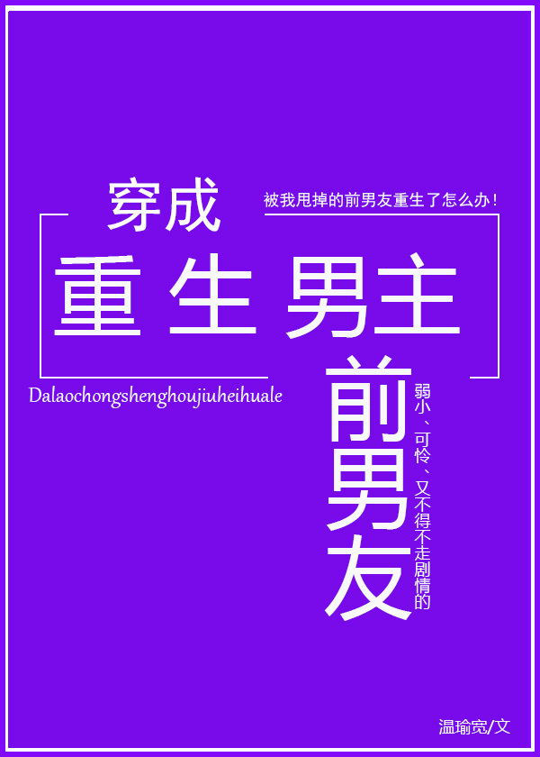

Song Xuanhe transmigró a un libro llamado "Los siete novios del presidente". Se convirtió en el exnovio carne de cañón del presidente, Song Xuanhe.
El Song Xuanhe del libro: 180 cm de altura, tan atractivo que superaría incluso a las celebridades más populares, tres generaciones de familia en el negocio, una tercera generación rica muy apropiada.
No fue una pérdida transmigrar a este tipo de persona. Era solo que esta era una historia de renacimiento.
Song Xuanhe en el libro abusó del protagonista masculino 800 veces e incluso indirectamente causó la muerte del protagonista masculino. Frente al protagonista masculino ennegrecido y renacido, su destino era obvio: no solo tocó fondo, sino que incluso murió sin un cadáver intacto.
En este momento, se había convertido en el exnovio carne de cañón que estaba condenado a morir sin un cadáver intacto.
—–
Sistema: ¿No crees que el protagonista masculino ha estado un poco extraño últimamente? Es como si estuviera tramando algo en la oscuridad.
Song Xuanhe: ¿Planeando cómo matarme?
Sistema: No, tramando cómo comerte.
—–
Song Xuanhe, que estaba acostado en la cama con dolor de cintura, dolor de espalda y piernas con calambres, maldijo al Sistema 800 veces. ¿Qué pasó con el protagonista masculino que era un shou?
Énfasis: ¡Xiao Yuanmu es el gong! ¡Xiao Yuanmu es el gong! ¡Xiao Yuanmu es el gong! Además, ¡el pez gordo siempre ha sido un gong! ¡Spoilers sólo hasta aquí!